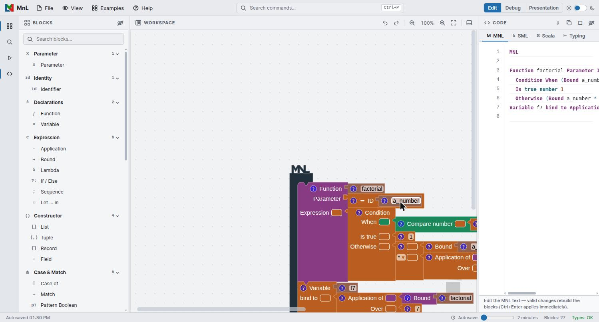
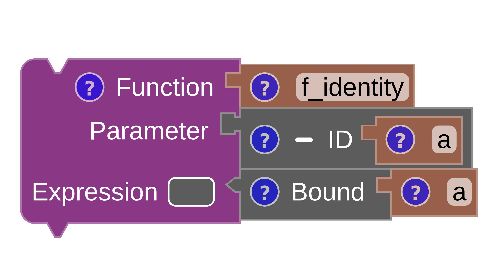
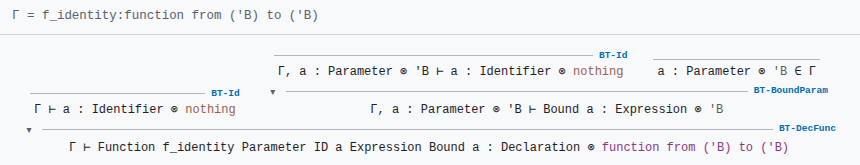

YAKI and the code panel
MnL’s compiler is called YAKI — Yet Another [K/C]ompiler Interface. It turns a block program into text: into MnL’s own textual form, into Standard ML, into Scala, and — going beyond compilation — into a typing derivation for the program it just read.
YAKI
Everything YAKI produces is live. It recompiles as you edit, so the code panel is always showing the program currently on the workspace rather than a snapshot you asked for.
Earlier versions opened YAKI in a separate transpiler window: you right-clicked the workspace, chose Compiler, and picked a target language from a combo box. In version 5 YAKI is the docked code panel on the right of the window, with one tab per target and no combo box.
The code panel
Open it from the activity bar, from the workspace toolbar, or with View: Toggle Code Panel in the command palette. It has four tabs.

| Tab | Contents |
|---|---|
| M MNL | MnL’s own textual syntax. Editable — see below. |
| λ SML | Standard ML, generated by YAKI. |
| S Scala | Scala, generated by YAKI. |
| ⊢ Typing | The typing derivation, rule by rule, for a chosen declaration. |
MNL text
The MNL tab is not read-only, and this is the most interesting thing about the panel: the mapping between blocks and text runs both ways. Edit the text and a valid change rebuilds the blocks on the workspace. Press Ctrl+Enter to apply an edit immediately rather than waiting.
For the bundled Factorial example, the MNL text reads:
MNL
Function factorial Parameter ID a_number Expression
Condition When (Bound a_number <= number 0)
Is true number 1
Otherwise (Bound a_number * (Application of Bound factorial Over (Bound a_number - number 1)))
Variable f7 bind to Application of Bound factorial Over number 7Read against the workspace, the text is a direct transcription: Function,
Parameter, Expression, Condition / When /
Is true / Otherwise, Bound, Application of …
Over and Variable … bind to are the labels on the blocks
themselves.
Round-tripping through text is a fast way to make a bulk change — renaming a parameter everywhere, say — that would take a lot of clicking on the workspace. An edit that does not parse is simply not applied, so the blocks never end up in an inconsistent state.
SML and Scala
YAKI emits both from the same program. Each file is stamped with a header naming the generator.
SML
(* SML Code by YAKI *)
fun factorial (a_number) =
if (a_number <= 0) then
1
else
(a_number * factorial((a_number - 1)))
val f7 = factorial(7)Scala
/* Scala Code by YAKI */
def factorial (a_number : Float) : Float =
if (a_number <= 0) then
1
else
(a_number * factorial((a_number - 1)))
val f7 = factorial(7)SML relies on inference and needs no annotations; Scala requires them, so YAKI writes the types it
inferred into the signature — here a_number : Float and the
: Float result. Some MnL constructs have no direct Scala counterpart: records are the
clearest case, since Scala has no primitive record type. YAKI says so in a comment rather than
emitting something that will not compile.
A smaller worked example — the identity function — shows the same pipeline from blocks to source:

SML
(* identity_function.sml *)
fun f_identity (a) = aScala
/* identity_function.scala */
def f_identity [B] (a : B) : B = aThe typing derivation
The Typing tab is where MnL writes out its reasoning about types. Pick a declaration
from the row at the top of the tab — factorial or f7 in the Factorial
example — and YAKI prints the derivation for it.
Each line is a judgement, preceded by the name of the rule that justifies it:
Γ = factorial : function from (number) to (number)
BT-Id
Γ ⊢ a_number : Identifier ⊗ nothing
BT-BoundParam
Γ, a_number : Parameter ⊗ number ⊢ Bound a_number : Expression ⊗ number
a_number : Parameter ⊗ number ∈ Γ
BT-Const
Γ, a_number : Parameter ⊗ number ⊢ number 0 : Expression ⊗ number
BT-BinOptr-Arith-Compare
Γ, a_number : Parameter ⊗ number ⊢ (Bound a_number <= number 0) : Expression ⊗ booleanThe shape of a judgement is worth pausing on, because it is the written form of what shape and colour encode on the workspace:
Γis the typing context — the names in scope with their types.- To the left of
⊗is the syntactic category: Identifier, Parameter, Expression, Declaration. This is what a block’s notch shape shows. - To the right of
⊗is the inferred type:number,boolean,nothing. This is what a block’s colour shows. - An indented line such as
a_number : Parameter ⊗ number ∈ Γis a side condition — the lookup that discharges the rule.
Rule names are prefixed BT-: BT-Id for an identifier,
BT-Const for a constant, BT-BoundParam for a reference to a parameter,
BT-BinOptr-Arith-Compare for a binary comparison, and so on.

Exporting
The icons at the top right of the code panel:
- Export MNL text — download the current tab’s text.
- Copy generated code — copy it to the clipboard.
- Print typing derivation — send the derivation to the printer, which is useful for handouts.
- Maximize / Hide — give the panel the whole window, or put it away. Drag its left edge to resize.
To keep the program itself rather than its translation, use
File › Save As… and the .mnl workspace format described
under files and autosave.